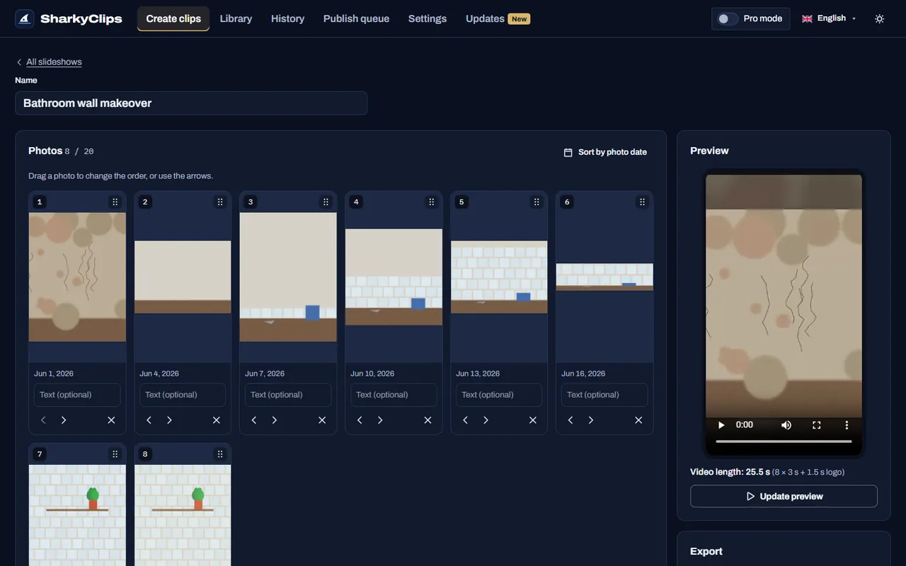

Everything SharkyClips does
From a long stream to clips people watch to the end. Easy mode does it all by itself; Pro mode gives you every setting.
Highlights
Finds the moments worth posting
SharkyClips listens and reads like an editor would.
- Loudness, laughter, shouting and reaction words
- Chat explosions from the chat replay (Twitch, YouTube, Kick)
- Clip edges snap to words, never in the middle of a sentence
- A local AI gives each clip a score and writes titles

Games
Knows your game
For Delta Force and League of Legends it reads the game screen itself.
- Kills, multikills, objectives and wins
- A multikill always fits in one clip
- Titles from what happened in the game
- More games as profiles you can add
Other games work too: the moments then come from your voice, the sound and the chat.
Editing
Clips that are ready to post
9:16 video with your facecam on top and the game below.
- Word-by-word subtitles, also right-to-left
- Swear words bleeped in 11 languages, and every clip checked again
- Smart zoom, instant replay and chat bubbles
- Edit by text: delete words to cut them
A clip with a swear word that is still audible is held back from automatic sharing until you listen to it.
Easy and Pro
Easy mode does it all
Drop a video and come back to finished clips. Switch to Pro mode for every setting.
- Best clips picked, shaped and rendered by themselves
- Clips by themselves after a stream (OBS folder or your channel)
- Mark moments while you play with a hotkey or !clip in chat
- Approve clips from your phone

Sharing
One Share for every platform
YouTube Shorts, TikTok and Instagram Reels from one window.
- A caption for each platform, with its limits checked
- Share now or pick a time
- Your YouTube uploads with your own free Google project
- A history of what you shared, so nothing is posted twice

TikTok and Instagram
The SharkyClips Helper fills in your uploadNew
A small browser extension. SharkyClips opens TikTok's upload page in your browser, and the Helper puts in the video and the caption.
- It stops before Post: you check and post yourself
- Works in Microsoft Edge, Opera, Opera GX and Brave by itself; Google Chrome needs one setup step
- Only runs on TikTok and Instagram pages
- Only talks to SharkyClips on your PC, nothing else
No password is ever stored or typed for you: you log in to TikTok yourself, once.
Photos
Photo slideshowNew
Turn 2 to 20 photos into a vertical video: perfect for before and after.
- Labels such as Before, Progress and Result in your language
- A slow, smooth zoom on every photo and soft transitions
- Your music, then the SharkyClips logo at the end
- Shared with the same Share button

Personalization
Themes and coloursNew
Pick a colour theme for the app: Classic, Ocean, Shark Sign or High contrast.
- Dark and light for every look
- Your own accent colour, checked for good contrast
- Calm or full animations, or none
- A small shark game while a stream is processing

Languages
11 languages
The app, speech recognition, titles and subtitles.
- English, Türkçe, Español, Português (Brasil), Deutsch, Français, Magyar
- Русский, العربية (right-to-left), 中文, 日本語
- Titles can be in another language than the one spoken
- Subtitles translated with their timing kept
Speech recognition (Whisper) and the AI run on your PC in every language.
Any PC
Works on normal PCs
No gaming PC needed. SharkyClips checks your hardware and picks the right setup.
- An NVIDIA GPU makes it much faster
- Light mode for older PCs and laptops without a GPU
- Silent mode pauses while you play or watch fullscreen
- A closed app goes on where it stopped
On a small 2-core laptop without a GPU, a 17-minute video takes about 16 minutes in Light mode.
Privacy
Private by design
There is no SharkyClips server.
- Speech recognition and the AI run on your PC
- No account, no analytics, no ads
- Your sign-ins are stored encrypted on your PC
- Your videos only leave your PC when you share them
Read the full privacy policy.